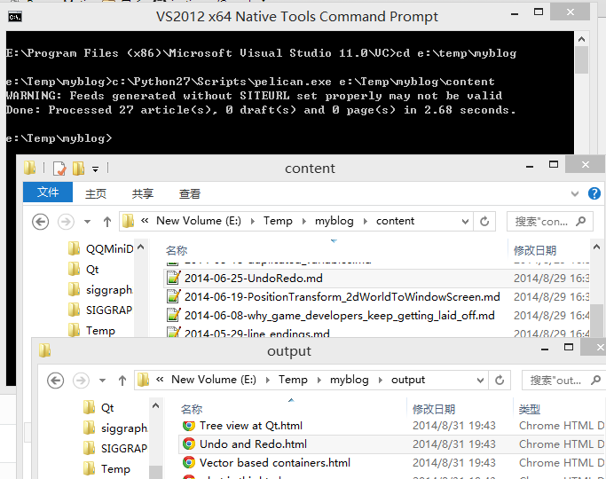

都不知道这是第几次又想建一个自己blog来host那些笔记了, 相比于之前的blogger, wordpress, 这次用pelican and python来搞...
环境:
- python 2.7, withn pip, easy_install
- pelican

注意上面的起始目录是E:\Temp\myblog> 我试过别的起始目录是E:\Temp\myblog\context> 就发生错误了. 进入output目录, 打开index.html就可以看到blog了。这里我没有用到make html命令哦.
遇到的problems:
- 设置图片目录的路径.
我的图片都是文档.md目录下的data目录, 例如folderA/xxx.md, folderA/data/yyy.PNG. 在pelican这里, 我想保持这样的结构, folderA 相当于 context目录, 目的是blog的内容(文档和图片)已经可以放到某个folderA里面, 然后要用pelican来build这个blog的时候, 直接把folderA目录里面的所有东西copy到context目录下就ok了.
但是pelican默认是把图片放到blogFolder/image目录, 跟blogFolder/context目录同级的. 要改动以下的设置, 在blogFolder/pelicanconf.py:
# static paths will be copied without parsing their contents
STATIC_PATHS = [
'data',
]
意思是把context目录下我加的data目录(里面是图片)copy到输出目录那边.
- 文件的编码
C:\Python27\Scripts\pelican.exe path_to_context_folder
可能会返回说某个位置的编码编译不过, 原因是pelican要求utf8 without BOM的格式. 中文嘛,
''
s——- 之前好像是用GBXXX格式来做encoding的.
修正方法是: Nodepad++ / Encoding / convert to UTF-8 w/o BOM
- 更改theme
build出来的blog是有默认主题的, 要改的话可以在setting file pelicanconf.py里面设置 THEME = "notmyidea" #这就是默认主题 or: THEME = "simple"